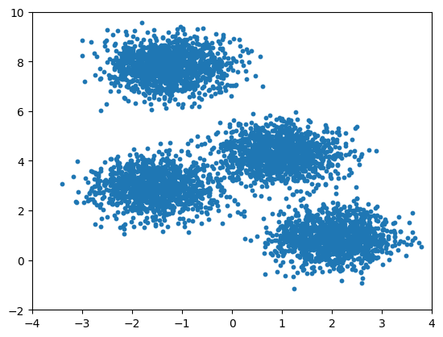
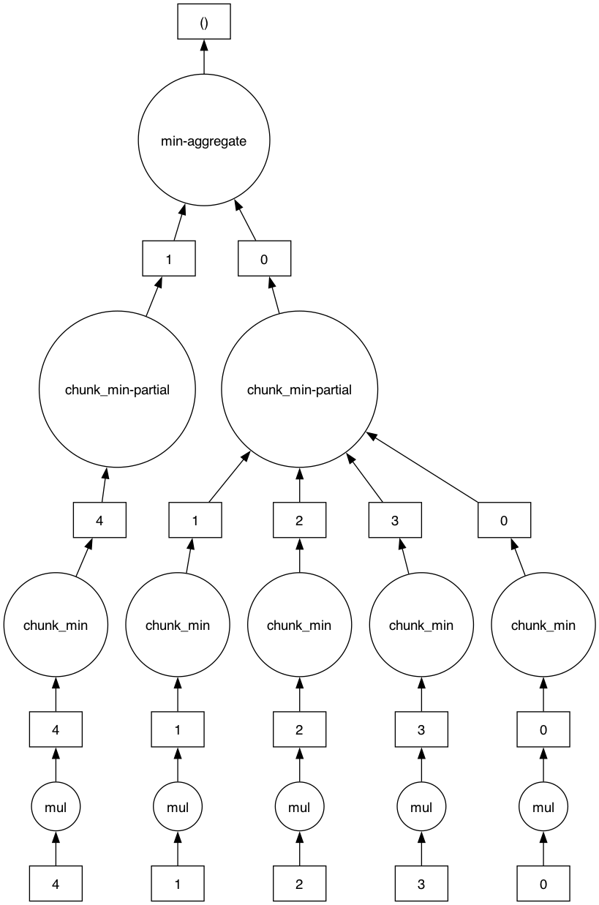
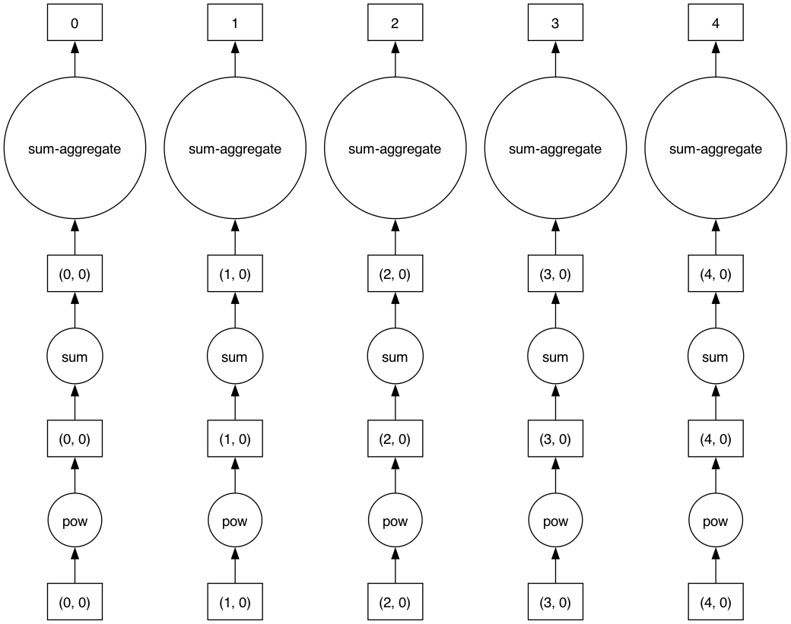
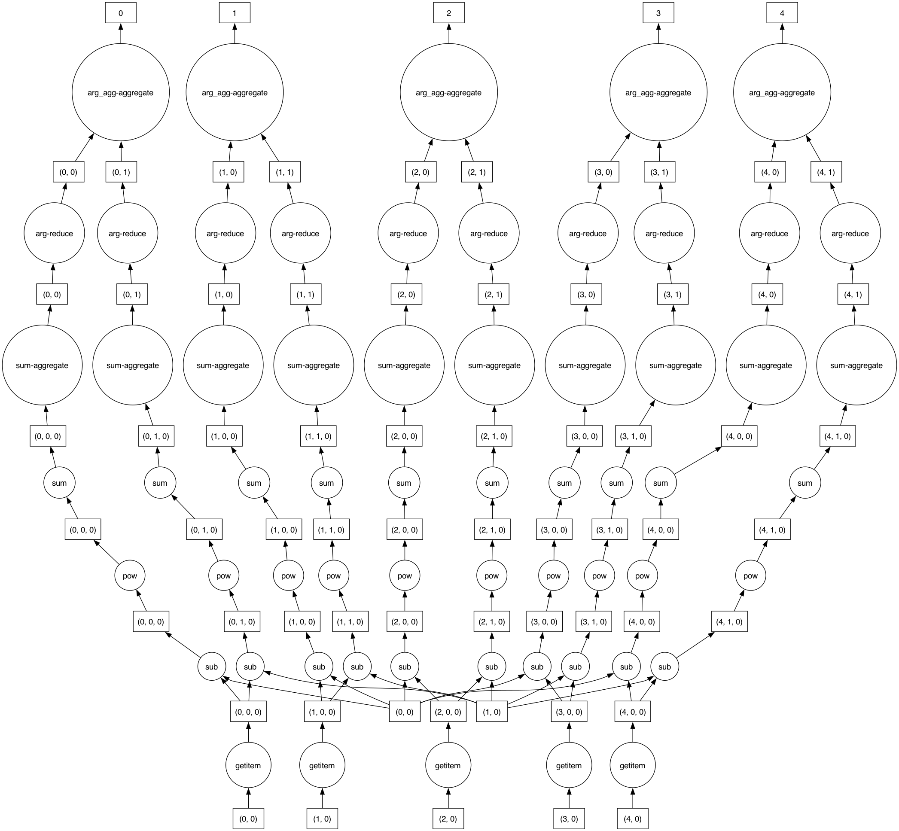

from sklearn.datasets import make_blobs
points, labels_true = make_blobs(
n_samples=5000, centers=4,
random_state=0, cluster_std=0.60
)Strategies for Optimizing Your Python Code
Strategies for Optimizing Your Python Code
Acknowledgements: heavily adopted from Jake VanderPlas’s 2018 PyCon talk:
- original notebook: https://gist.github.com/jakevdp/256c3ad937af9ec7d4c65a29e5b6d454
- Talk: https://www.youtube.com/watch?v=zQeYx87mfyw
K Means: The Algorithm
- Guess some cluster centers
- Repeat until converged
- assign points to the nearest cluster center
- set the cluster centers to the mean of assigned points
import matplotlib.pyplot as plt
plt.scatter(points[:, 0], points[:, 1], s=10)
plt.xlim(-4, 4)
plt.ylim(-2, 10)
plt.show()
Basic Python implementation
def dist(x, y):
return sum((xi - yi)**2 for xi, yi in zip(x, y))
def find_labels(points, centers):
labels = []
for point in points:
distances = [dist(point, center) for center in centers]
labels.append(distances.index(min(distances)))
return labels
def compute_centers(points, labels):
n_centers = len(set(labels))
n_dims = len(points[0])
centers = [[0 for i in range(n_dims)] for j in range(n_centers)]
counts = [0 for j in range(n_centers)]
for label, point in zip(labels, points):
counts[label] += 1
centers[label] = [a + b for a, b in zip(centers[label], point)]
return [[x / count for x in center] for center, count in zip(centers, counts)]
def kmeans(points, n_clusters):
centers = points[-n_clusters:].tolist()
while True:
old_centers = centers
labels = find_labels(points, centers)
centers = compute_centers(points, labels)
if centers == old_centers:
break
return labelskmeans(points, 10)[:10][5, 3, 4, 5, 0, 4, 9, 6, 0, 7]%timeit kmeans(points, 10)2.76 s ± 31 ms per loop (mean ± std. dev. of 7 runs, 1 loop each)Strategy #1: line profiling
Put most of your efforts on the parts of the code that actually take the most time. To find those, you can use a line profiling tool (make sure to pip install line_profiler).
%load_ext line_profiler%lprun -f kmeans kmeans(points, 10)Timer unit: 1e-09 s
Total time: 4.56715 s
File: /var/folders/ng/d9rd9fb92c7bxz9fy7vwpj7m0000gp/T/ipykernel_13369/3233416767.py
Function: kmeans at line 21
Line # Hits Time Per Hit % Time Line Contents
==============================================================
21 def kmeans(points, n_clusters):
22 1 129000.0 129000.0 0.0 centers = points[-n_clusters:].tolist()
23 54 9000.0 166.7 0.0 while True:
24 54 45000.0 833.3 0.0 old_centers = centers
25 54 4389825000.0 8e+07 96.1 labels = find_labels(points, centers)
26 54 177088000.0 3e+06 3.9 centers = compute_centers(points, labels)
27 54 57000.0 1055.6 0.0 if centers == old_centers:
28 1 0.0 0.0 0.0 break
29 1 1000.0 1000.0 0.0 return labels%lprun -f find_labels kmeans(points, 10)Timer unit: 1e-09 s
Total time: 4.57433 s
File: /var/folders/ng/d9rd9fb92c7bxz9fy7vwpj7m0000gp/T/ipykernel_13369/3233416767.py
Function: find_labels at line 4
Line # Hits Time Per Hit % Time Line Contents
==============================================================
4 def find_labels(points, centers):
5 54 72000.0 1333.3 0.0 labels = []
6 270054 52908000.0 195.9 1.2 for point in points:
7 2970000 4415870000.0 1486.8 96.5 distances = [dist(point, center) for center in centers]
8 270000 105452000.0 390.6 2.3 labels.append(distances.index(min(distances)))
9 54 24000.0 444.4 0.0 return labelsThe majority of the compute time (~97% of the find_labels function, which itself takes up ~96% of the total kmeans function) is spent in calculating the distances, which is an operation repeated over the arrays of point locations.
For repeated operations on arrays, Numpy is your first place to turn.
2. NumPy Vectorization / Broadcasting
Optimizes repeated operations on arrays.
import numpy as np
def find_labels(points, centers):
diff = (points[:, None, :] - centers)
distances = (diff**2).sum(-1)
return distances.argmin(1)
def compute_centers(points, labels):
n_centers = len(set(labels))
n_dims = len(points[0])
centers = [[0 for i in range(n_dims)] for j in range(n_centers)]
counts = [0 for j in range(n_centers)]
for label, point in zip(labels, points):
counts[label] += 1
centers[label] = [a + b for a, b in zip(centers[label], point)]
return [[x / count for x in center] for center, count in zip(centers, counts)]
def compute_centers(points, labels):
n_centers = len(set(labels))
return np.array([points[labels == i].mean(0) for i in range(n_centers)])
def kmeans(points, n_clusters):
centers = points[-n_clusters:]
while True:
old_centers = centers
labels = find_labels(points, centers)
centers = compute_centers(points, labels)
if np.all(centers == old_centers):
break
return labelskmeans(points, 10)[:10]array([5, 3, 4, 5, 0, 4, 9, 6, 0, 7])%timeit kmeans(points, 10)76 ms ± 169 μs per loop (mean ± std. dev. of 7 runs, 10 loops each)Using NumPy takes the algorithm down from nearly three seconds to below one hundred milliseconds!
The key here is that repeated operations have been pushed into a compiled layer. Use NumPy everywhere when doing numerical calculations with arrays.
Use NumPy everywhere!
Advantages:
- Python overhead per array rather than per array element
- Compact domain specific language for array operations
- NumPy is widely available
Disadvantages:
- Batch operations can lead to excessive memory usage
- Different way of thinking about writing code
%lprun -f kmeans kmeans(points, 10)Timer unit: 1e-09 s
Total time: 0.142411 s
File: /var/folders/ng/d9rd9fb92c7bxz9fy7vwpj7m0000gp/T/ipykernel_13369/2497051821.py
Function: kmeans at line 25
Line # Hits Time Per Hit % Time Line Contents
==============================================================
25 def kmeans(points, n_clusters):
26 1 98000.0 98000.0 0.1 centers = points[-n_clusters:]
27 54 15000.0 277.8 0.0 while True:
28 54 11000.0 203.7 0.0 old_centers = centers
29 54 97292000.0 2e+06 68.3 labels = find_labels(points, centers)
30 54 43640000.0 808148.1 30.6 centers = compute_centers(points, labels)
31 54 1355000.0 25092.6 1.0 if np.all(centers == old_centers):
32 1 0.0 0.0 0.0 break
33 1 0.0 0.0 0.0 return labels%lprun -f find_labels kmeans(points, 10)Timer unit: 1e-09 s
Total time: 4.60709 s
File: /var/folders/ng/d9rd9fb92c7bxz9fy7vwpj7m0000gp/T/ipykernel_13369/3233416767.py
Function: find_labels at line 4
Line # Hits Time Per Hit % Time Line Contents
==============================================================
4 def find_labels(points, centers):
5 54 52000.0 963.0 0.0 labels = []
6 270054 52181000.0 193.2 1.1 for point in points:
7 2970000 4453916000.0 1499.6 96.7 distances = [dist(point, center) for center in centers]
8 270000 100907000.0 373.7 2.2 labels.append(distances.index(min(distances)))
9 54 33000.0 611.1 0.0 return labels%lprun -f compute_centers kmeans(points, 10)Timer unit: 1e-09 s
Total time: 0.276425 s
File: /var/folders/ng/d9rd9fb92c7bxz9fy7vwpj7m0000gp/T/ipykernel_13369/3233416767.py
Function: compute_centers at line 11
Line # Hits Time Per Hit % Time Line Contents
==============================================================
11 def compute_centers(points, labels):
12 54 2770000.0 51296.3 1.0 n_centers = len(set(labels))
13 54 101000.0 1870.4 0.0 n_dims = len(points[0])
14 1674 420000.0 250.9 0.2 centers = [[0 for i in range(n_dims)] for j in range(n_centers)]
15 594 100000.0 168.4 0.0 counts = [0 for j in range(n_centers)]
16 270054 49242000.0 182.3 17.8 for label, point in zip(labels, points):
17 270000 30445000.0 112.8 11.0 counts[label] += 1
18 810000 192816000.0 238.0 69.8 centers[label] = [a + b for a, b in zip(centers[label], point)]
19 1674 531000.0 317.2 0.2 return [[x / count for x in center] for center, count in zip(centers, counts)]We can see that the time is now somewhat balanced between calculating the distances between points, and computing the centers of the clusters.
3. Special Data Structures
To further speed up this algorithm, we can use special data structures to help further, provided by the scikit-learn and pandas packages.
First, use the KD Tree structure designed for nearest neighbor searches, provided by scikit-learn.
NumPy code:
import numpy as np
def find_labels(points, centers):
diff = (points[:, None, :] - centers) ** 2
distances = diff.sum(-1)
return distances.argmin(1)KD-Tree code:
from scipy.spatial import cKDTree
def find_labels(points, centers):
distances, labels = cKDTree(centers).query(points, 1)
return labelsThen, computing the centers of the clusters is essentially a “group-by” operation: group values by their label, then aggregate those values in the groups. Pandas offers a very efficient group-by operation in its DataFrame structure.
NumPy code:
def compute_centers(points, labels):
n_centers = len(set(labels))
return np.array([points[labels == i].mean(0) for i in range(n_centers)])Pandas code:
import pandas as pd
def compute_centers(points, labels):
df = pd.DataFrame(points)
return df.groupby(labels).mean().valuesfrom scipy.spatial import cKDTree
import pandas as pd
def find_labels(points, centers):
distances, labels = cKDTree(centers).query(points, 1)
return labels
def compute_centers(points, labels):
df = pd.DataFrame(points)
return df.groupby(labels).mean().values
def kmeans(points, n_clusters):
centers = points[-n_clusters:]
while True:
old_centers = centers
labels = find_labels(points, centers)
centers = compute_centers(points, labels)
if np.all(centers == old_centers):
break
return labelskmeans(points, 10)[:10]array([5, 3, 4, 5, 0, 4, 9, 6, 0, 7])%timeit kmeans(points, 10)53.6 ms ± 277 μs per loop (mean ± std. dev. of 7 runs, 10 loops each)%lprun -f kmeans kmeans(points, 10)Timer unit: 1e-09 s
Total time: 0.08276 s
File: /var/folders/ng/d9rd9fb92c7bxz9fy7vwpj7m0000gp/T/ipykernel_13369/3764998874.py
Function: kmeans at line 12
Line # Hits Time Per Hit % Time Line Contents
==============================================================
12 def kmeans(points, n_clusters):
13 1 8000.0 8000.0 0.0 centers = points[-n_clusters:]
14 54 8000.0 148.1 0.0 while True:
15 54 9000.0 166.7 0.0 old_centers = centers
16 54 56628000.0 1e+06 68.4 labels = find_labels(points, centers)
17 54 25563000.0 473388.9 30.9 centers = compute_centers(points, labels)
18 54 543000.0 10055.6 0.7 if np.all(centers == old_centers):
19 1 0.0 0.0 0.0 break
20 1 1000.0 1000.0 0.0 return labelsRuntime reduced down to ~54 ms, compared to:
- 2.7 s in pure Python
- 76 ms with NumPy vectorization
by taking advantage of specialized data structures designed for the exact low-level algorithms we need.
Other useful data structures include:
scipy.spatial: for spatial queries like distances, nearest neighbors, etc.pandas: for SQL-like grouping & aggregationxarray: for grouping across multiple dimensionsscipy.sparse: sparse matrices for two-dimensional structured datasparsepackage: for N-dimensional structured datascipy.sparse.csgraph: for graph-like problems (e.g., finding shortest paths)
Advantages: these are often the fastest possible way to solve a particular problem.
Disadvantages: require broad & deep understanding of both algorithms and their available implementations.
4. Cython
Combine powers of C with Python.
We can do this by adding types, then Cython knows how to compile it down to C code.
%load_ext Cython# Python version
def dist(x, y):
dist = 0
for i in range(len(x)):
dist += (x[i] - y[i]) ** 2
return dist
def find_labels(points, centers):
labels = []
for point in points:
distances = [dist(point, center) for center in centers]
labels.append(distances.index(min(distances)))
return labelscenters = points[:10]
%timeit find_labels(points, centers)34.4 ms ± 370 μs per loop (mean ± std. dev. of 7 runs, 10 loops each)%%cython
#| output: false
cimport numpy as np
cdef double dist(double[:] x, double[:] y):
cdef double dist = 0
for i in range(len(x)):
dist += (x[i] - y[i]) ** 2
return dist
def find_labels(points, centers):
labels = []
for point in points:
distances = [dist(point, center) for center in centers]
labels.append(distances.index(min(distances)))
return labelscenters = points[:10]
%timeit find_labels(points, centers)20.3 ms ± 241 μs per loop (mean ± std. dev. of 7 runs, 10 loops each)%%cython
cimport numpy as np
import numpy as np
cdef double dist(double[:] x, double[:] y):
cdef double dist = 0
for i in range(len(x)):
dist += (x[i] - y[i]) ** 2
return dist
def find_labels(double[:, :] points, double[:, :] centers):
cdef int n_points = points.shape[0]
cdef int n_centers = centers.shape[0]
cdef double[:] labels = np.zeros(n_points)
cdef double distance, nearest_distance
cdef int nearest_index
for i in range(n_points):
nearest_distance = np.inf
for j in range(n_centers):
distance = dist(points[i], centers[j])
if distance < nearest_distance:
nearest_distance = distance
nearest_index = j
labels[i] = nearest_index
return np.asarray(labels)centers = points[:10]
%timeit find_labels(points, centers)347 μs ± 906 ns per loop (mean ± std. dev. of 7 runs, 1,000 loops each)Advantages:
- Python-like code at C-like speeds!
Disadvantages:
- Explicit type annotation can be cumbersome
- Often requires restructuring code
- Code build becomes more complicated
Use for operations that can’t easily be expressed in NumPy.
5. Numba
Numba is a just-in-time (JIT) compiler that compiles Python functions to optimized machine code at runtime using the industry-standard LLVM compiler library.
Numba can infer the types without being explicitly told what they are.
We can frequently accelerate Python code very easily using Numba, simply by adding the @numba.jit(nopython=True) decorator to functions.
# pure Python version
def dist(x, y):
dist = 0
for i in range(len(x)):
dist += (x[i] - y[i]) ** 2
return dist
def find_labels(points, centers):
labels = []
min_dist = np.inf
min_label = 0
for i in range(len(points)):
for j in range(len(centers)):
distance = dist(points[i], centers[j])
if distance < min_dist:
min_dist, min_label = distance, j
labels.append(min_label)
return labelscenters = points[:10]
%timeit find_labels(points, centers)34.1 ms ± 240 μs per loop (mean ± std. dev. of 7 runs, 10 loops each)import numba
@numba.jit(nopython=True)
def dist(x, y):
dist = 0
for i in range(len(x)):
dist += (x[i] - y[i]) ** 2
return dist
@numba.jit(nopython=True)
def find_labels(points, centers):
labels = []
min_dist = np.inf
min_label = 0
for i in range(len(points)):
for j in range(len(centers)):
distance = dist(points[i], centers[j])
if distance < min_dist:
min_dist, min_label = distance, j
labels.append(min_label)
return labelscenters = points[:10]
%timeit find_labels(points, centers)106 μs ± 7.21 μs per loop (mean ± std. dev. of 7 runs, 1 loop each)Advantages:
- Python code JIT-compiled to Fortran speeds!
Disadvantages:
- Heavy dependency chain (LLVM)
- Some Python constructs not supported
- Still a bit finnicky
Recommendation: definitely use for analysis scripts, but be more cautious using in packages as a dependency.
Also possible to automatically parallelize loops on CPUs and GPUs, but this requires special care.
6. Dask
Useful for when your data becomes too large for a single machine’s memory, or you want to distribute your work across systems.
Typical data manipulation with NumPy:
import numpy as np
a = np.random.randn(1000)
b = a * 4
b_min = b.min()
print(b_min)-14.778280420773221Same operation with Dask:
import dask.array as da
a2 = da.from_array(a, chunks=200)
b2 = a2 * 4
b2_min = b2.min()
print(b2_min)dask.array<min-aggregate, shape=(), dtype=float64, chunksize=(), chunktype=numpy.ndarray>b2_min.compute()np.float64(-14.778280420773221)b2_min.visualize(filename="dask_ex.png")
from dask import array as da
from dask import dataframe as dd
points_dask = da.from_array(points, chunks=1000)
result = (points_dask ** 2).sum(1)
result.compute()array([ 5.94673918, 14.00964977, 13.12598814, ..., 64.21143425,
67.46733724, 51.7011693 ])result.visualize(filename='dask_distance.png')
from dask import array as da
def find_labels(points, centers):
diff = (points[:, None, :] - centers)
distances = (diff ** 2).sum(-1)
return distances.argmin(1)
centers = points[:10]
points_dask = da.from_array(points, chunks=1000)
centers_dask = da.from_array(centers, chunks=5)
labels_dask = find_labels(points_dask, centers_dask)labels_dask.compute()array([0, 1, 2, ..., 6, 9, 6])labels_dask.visualize(filename='dask-labels.png')
from dask import dataframe as dd
def compute_centers(points, labels):
points_df = dd.from_dask_array(points, columns=['x', 'y'])
points_df['label'] = dd.from_dask_array(labels)
return points_df.groupby('label')['x', 'y'].mean()
result = compute_centers(points_dask, labels_dask)result.compute().valuesarray([[ 2.00922872, 1.03540404],
[-2.0667431 , 2.52306223],
[-0.8672449 , 3.01911047],
[ 2.22058825, -0.07949264],
[ 0.80306779, 4.89056466],
[-1.70344324, 3.23137327],
[-1.60575186, 7.32973674],
[-0.69320682, 7.69520974],
[ 1.11008872, 3.98520896],
[-1.41988679, 8.41475127]])def find_labels(points, centers):
diff = (points[:, None, :] - centers)
distances = (diff ** 2).sum(-1)
return distances.argmin(1)
def compute_centers(points, labels):
points_df = dd.from_dask_array(points, columns=['x', 'y'])
points_df['label'] = dd.from_dask_array(labels)
return points_df.groupby('label')['x', 'y'].mean()
def kmeans(points, n_clusters):
centers = points[-n_clusters:]
points = da.from_array(points, 1000)
while True:
old_centers = centers
labels = find_labels(points, da.from_array(centers, 5))
centers = compute_centers(points, labels)
centers = centers.compute().values
if np.all(centers == old_centers):
break
return labels.compute()%timeit kmeans(points, 10)1.34 s ± 184 ms per loop (mean ± std. dev. of 7 runs, 1 loop each)Advantages:
- Easy distributed coding, often with no change to NumPy or Pandas code!
- Even works locally on out-of-core data
Disadvantages:
- High overhead, so not suitable for smaller problems
Recommendation: use when data size or computation time warrants
7. Find an existing implementation
For example, scikit-learn’s k-means:
from sklearn.cluster import KMeans
%timeit KMeans(4).fit_predict(points)2.24 ms ± 98.4 μs per loop (mean ± std. dev. of 7 runs, 100 loops each)Takehome messages
- Start with line profiling to identify expensive parts of code.
- Rely heavily on NumPy arrays and vectorization/broadcasting of array operations.
- Use specialized data structures and associated functions when possible.
- Cython can enable C-like speeds, but makes code more complicated.
- Numba can rapidly speed up many calculations with JIT compilation.
- Dask can enable Distributed operations over large data.
- Don’t reinvent the wheel–use existing implementations when possible!